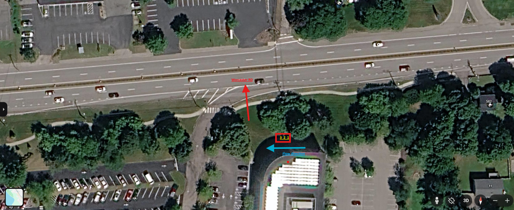

AH-2 water source
Click an equipment label to explore it. Use the zoom buttons for a closer look.
How to use this 3D view
- Watch the water flow. Click As the water flows to follow the blue drop through the system. Use Pause to take a closer look, Resume to continue, or End tour to return to the overview. Selecting equipment or moving the model ends the tour so you can explore freely.
- Explore equipment. Click an equipment label or a visible component to open its close-up. You can also choose equipment from the buttons below the model. Its description and photographs appear in the information panel.
- Rotate and zoom. Press and hold on an empty part of the model, then drag. Use Zoom in and Zoom out, or scroll with your mouse. On a touchscreen, drag with one finger and use the zoom buttons.
- Return to a clear view. Use Component overview for the whole assembly, Overhead to look down, or Close-up for the selected component. Click Reset view if you lose your place.
- View photographs. Click View photo or an additional photograph to enlarge it. Click Close to return.
- Explore another source. Click Back to site map at the top of the page.

Worcester Road above · 3 / 2 / 1 left-to-right · Placement not surveyed
3D is unavailable. Use the component list and reference photographs below.
Components are not to scale. This view illustrates the component assembly.Drag to orbit · Scroll to zoom
Choose equipment